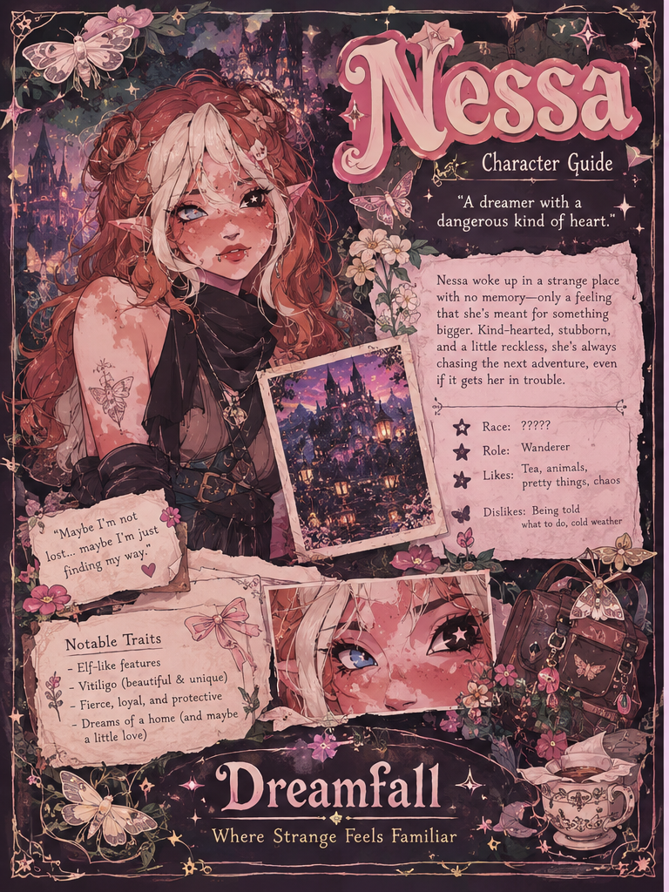

Character Guide
Nessa
A dreamer with a dangerous kind of heart.

Nessa
Nessa woke up in a strange place with no memory — only a feeling that she is meant for something bigger. Kind-hearted, stubborn, and a little reckless, she keeps chasing the next adventure even when it gets her in trouble.
Race: ?????
Role: Wanderer
Likes: Tea, animals, pretty things, chaos
Dislikes: Being told what to do, cold weather
“Maybe I’m not lost… maybe I’m just finding my way.”